面向城市级 3D 视觉定位的图结构关系建模：语言侧用依存图表达句法与空间关系，场景侧用邻域实例补足上下文。
“Existing methods largely rely on implicit sequence modeling and isolated instance representations…”
三个城市级基准均取得最优；CityRefer 的提升主要来自 Building（+34.06） 与 Car（+33.68） 这两类最依赖关系理解的目标。
注：增益数值取自论文摘要与 Table 3–5，均为 Overall Accuracy（%）。
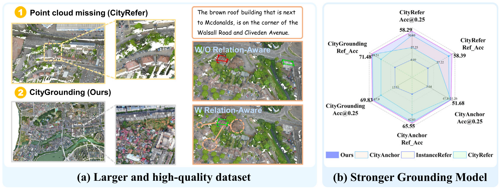
Fig. 1 (a) Previous datasets suffer from incomplete point clouds and limited scene coverage. We construct a larger-scale and higher-quality urban visual grounding dataset using UAV-captured city scenes. The right side shows results before and after applying the relation-aware module, where light Orange dashed circles mark the neighbors of the target instance. (b) our method achieves state-of-the-art performance on the CityRefer, CityAnchor, and CityGrounding datasets, where Ref_Acc denotes the proportion of correctly grounded target instances. The dashed lines indicate that the corresponding values are not available.
把 InstanceRefer 从室内搬到室外，架构适配有限，语言建模与目标间关系推理仍停留在室内范式。
两阶段：粗定位 + MLLM 精细匹配。依赖数据质量、人工 ROI 调整与任务特定微调，跨场景可扩展性受限。
文本编码器把语言当作扁平 token 序列，忽略语法结构与空间从句；实例又被当作孤立实体，缺少邻居上下文。
结果：在城市里“背靠红色小车的公交站”这类表达，模型既 读不懂句法层级，也 看不见周围参照物。
显式建模跨模态关系结构，替代隐式序列建模与孤立实例推理，面向密集城市场景。
Graph-Structured Relation Extraction Module：把描述解析为依存语义图，用边感知注意力建模词间与空间关系。
Neighbor-Guided Relation Enhancement：聚合候选实例与关键地标的邻域特征，补足目标周围的几何与语义上下文。
真实、厘米级、高密度的城市点云定位数据：32.9k 描述、11,000 实例、1,110 pts/m²。
CityRefer、CityAnchor 与 CityGrounding 三个基准上均取得 state-of-the-art，其中 CityRefer Overall 提升 +31.24 个百分点。
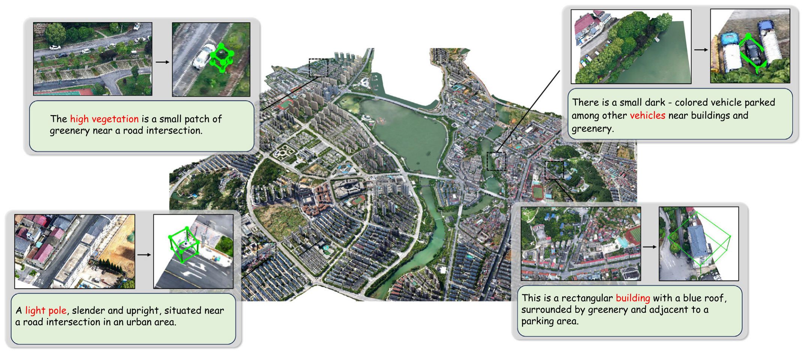
Fig. 3 Scene-level qualitative visualization of our dataset, shown in a representative urban environment.
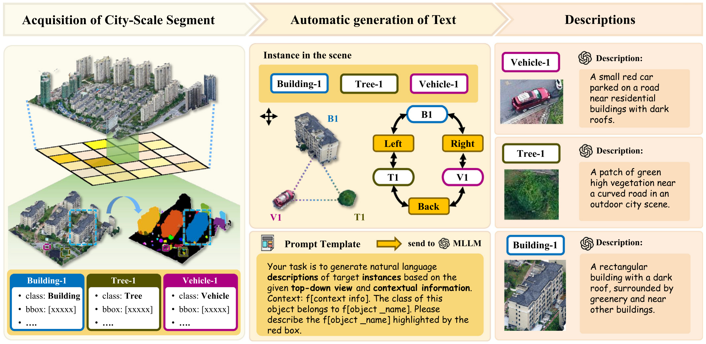
Fig. 2 Overview of the CityGrounding data construction process. The left side shows our spatial partitioning strategy. We perform instance segmentation on raw point clouds, compute inter-instance angular relations to build a scene graph, and use an MLLM to generate natural language descriptions from instance top-down views.
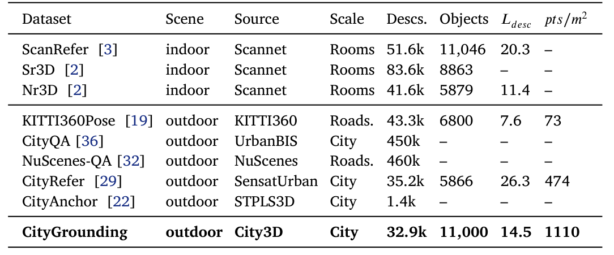
Table 1 Comparison of existing 3D visual grounding datasets. Ldesc indicates the average length of natural language descriptions, and points/m² represents the number of points per square meter in the scene.
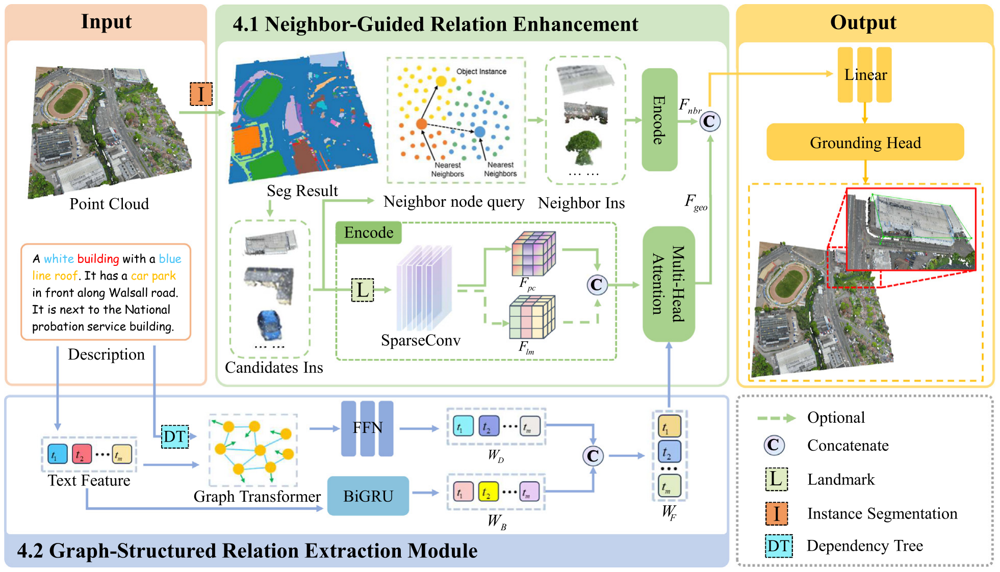
Fig. 4 Overview of the proposed framework. The model first extracts text embeddings using the Graph-Structured Relation Extraction Module. For the point cloud, candidate objects, neighboring objects, and landmarks are encoded by a SparseConv backbone. Landmark features are further enriched with their textual names. The fused features from text, candidate, neighboring, and landmark branches are processed by a BiGRU and softmax layer to predict the target object corresponding to the input text query.
依存句法图 + 边感知注意力 → relation-aware 文本特征
候选 / 邻居 / 地标三支 SparseConv，地标再叠加文本名称
多模态融合后对候选实例打分，取最高分作为定位结果
要点：句法结构不是学出来的软约束，而是 确定性的结构先验；注意力只能沿依存边流动，从而抑制扁平编码带来的结构歧义。
式 (5)–(9)，其中 E 为可选 mask 或边嵌入；Q 为候选实例特征，K/V 为文本特征。
与 GSREM 互补：GSREM 约束 语言内部的关系，NGRE 补足 场景之中的关系；二者共同支撑关系感知定位。
文本侧 WF 与视觉侧 F̃geo 融合为统一的多模态表示，再经 BiGRU 建模序列上下文。
softmax 层对场景内候选实例输出 grounding score，取最高分实例作为最终定位结果。
对每个场景的候选分数与真值标签计算 Softmax Ranking Loss，按 batch 求平均。
评估口径：预测框与真值框的 IoU 阈值 0.25，所有实验一致；论文仅给出这一项 Reference Loss 作为训练目标。
SensatUrban 点云 + 语言标注，含 5k 地标；四类：Building、Car、Ground、Parking。测试集不可用，报告验证集结果。
STPLS3D 城市场景，九类目标。验证时合并 NO（新物体）与 ND（新描述）子集。
367 场景训练 / 92 场景验证，按场景划分，同一场景的描述与目标不跨集，避免数据泄漏。
实现：PyTorch；Adam，学习率 1×10⁻⁴，weight decay 1×10⁻⁵；指标为 IoU 0.25 下的 grounding accuracy。
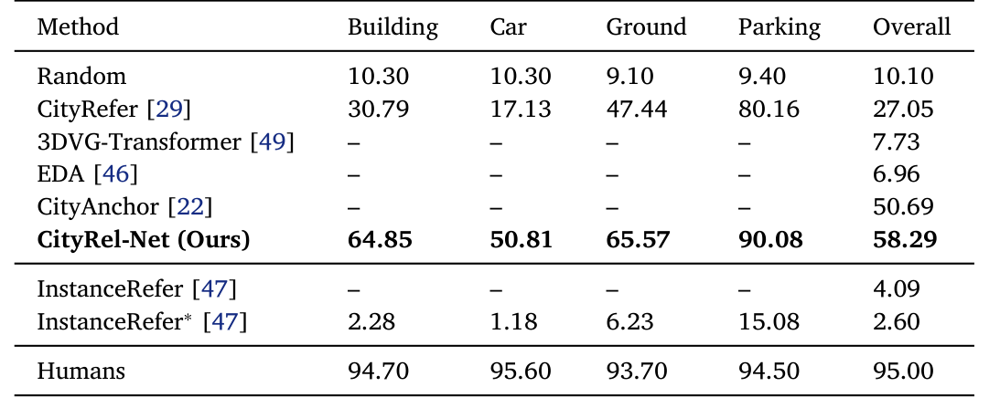
Table 3 Evaluation (%) of 3D visual grounding methods on CityRefer.
解读：这一基准的绝对提升小于 CityRefer，但起点已接近 50%，增量空间更窄；同时它更接近“开放词表”真实部署条件。
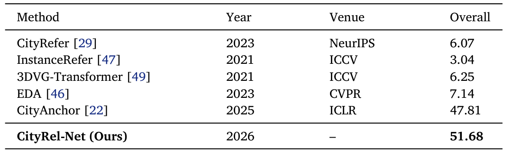
Table 5 Performance comparison (%) on the CityAnchor dataset.
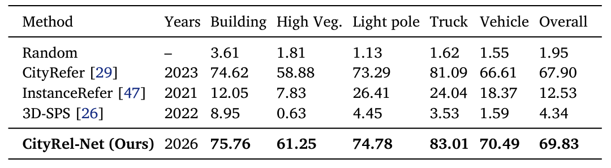
Table 4 Evaluation (%) of urban 3D visual grounding methods on CityGrounding.
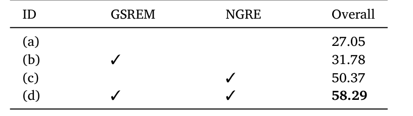
Table 6 Performance gains (%) from ablating the GSREM and NGRE modules.
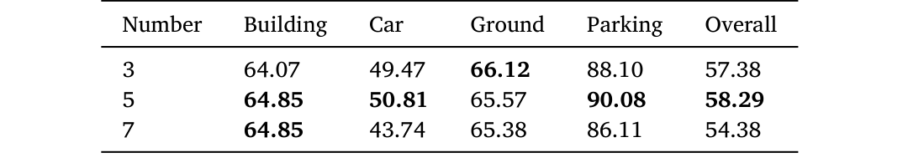
Table 7 Ablation results (%) of varying the number of neighboring instances k in the NGRE module.
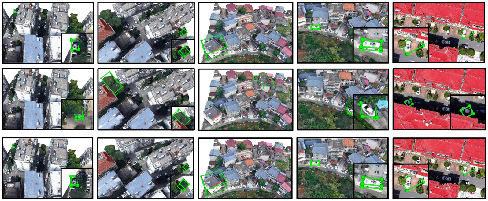
Fig. 5 Qualitative comparison between CityRefer and our CityRel-Net on the CityGrounding dataset.
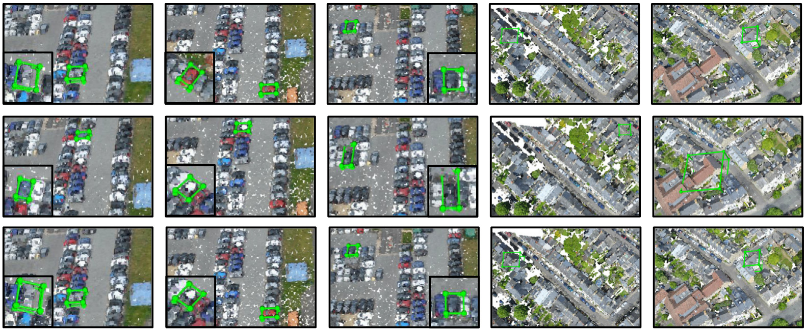
Fig. 6 Qualitative comparison between CityRefer and our CityRel-Net on the CityRefer dataset.
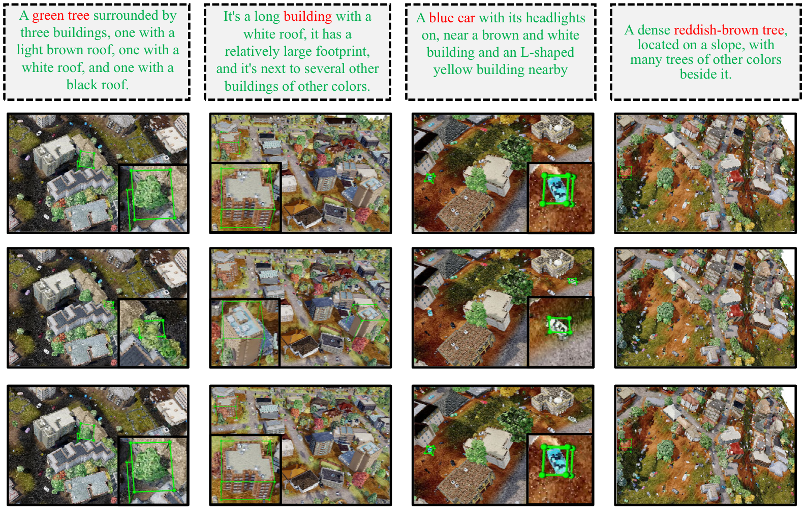
Fig. 7 Qualitative comparison between CityRefer and our CityRel-Net on the CityAnchor dataset.
GSREM 管语言结构、NGRE 管场景邻域，二者互补；三基准均达 SOTA，CityRefer +31.24。
描述由 MLLM 自动生成，虽有结构化提示、自动过滤与人工抽样，仍存在标注噪声风险；CityRefer 仅验证集可评。
作者表示将继续扩展与完善 CityGrounding，以支持更广泛的城市定位研究。
一句话总结：城市级 3D 定位的瓶颈不在“看见”，而在 “读懂关系”；把语言解析成图、把目标放回邻居之中，是本文给出的可复现答案。
注：论文未给出定量局限分析；上表“边界”一栏依据正文与表注整理，未替作者补充结论。